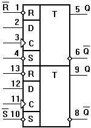

Микросхема К155ТМ2
Микросхема К155ТМ2 содержит в себе два независимых D-триггера, срабатывающих по положительному фронту тактового сигнала. Кроме этого в каждом из триггеров предусмотрены входы принудительной установки "1" или "0".
Корпус К155ТМ2 типа 201.14-2, масса не более 1 г и у КМ155ТМ2 типа 201.14-8, масса не более 2,2 г.
 Рис. 1 - Обозначение на схеме и распиновка ИМС К155ТМ2 |
Назначение выводов: 1 - инверсный вход установки "0" R1; 2 - вход D1; 3 - вход синхронизации C1; 4 - инверсный вход установки "1" S1; 5 - выход Q1; 6 - выход инверсный Q1; 7 - общий; 8 - выход инверсный Q2; 9 - вход Q2; 10 - инверсный вход установки "1" S2; 11 - вход синхронизации C2; 12 - вход D2; 13 - инверсный вход установки "0" R2; 14 - напряжение питания; |
Таблица 1
| Параметр | Значение |
|---|---|
| Номинальное напряжение питания | 5 В ±5 % |
| Выходное напряжение низкого уровня | не более 0,4 В |
| Выходное напряжение высокого уровня | не менее 2,4 В |
| Напряжение на антизвонном диоде | не менее -1,5 В |
| Входной ток низкого уровня по входам 2, 4, 10, 12 по входам 1, 3, 11, 13 |
не более -1,6 мА не более -3,2 мА |
| Входной ток высокого уровня по входам 2, 12 по входам 4, 3, 11, 10 |
не более 0,04 мА не более 0,08 мА |
| Входной пробивной ток | не более 1 мА |
| Ток короткого замыкания | -18...-55 мА |
| Ток потребления | не более 30 мА |
| Потребляемая статическая мощность на один триггер | не более 78,75 мВт |
| Время задержки распространения при включении | не более 40 нс |
| Время задержки распространения при выключении | не более 25 нс |
| Тактовая частота | не более 15 МГц |
Зарубежные аналоги
SN7474N, SN7474J